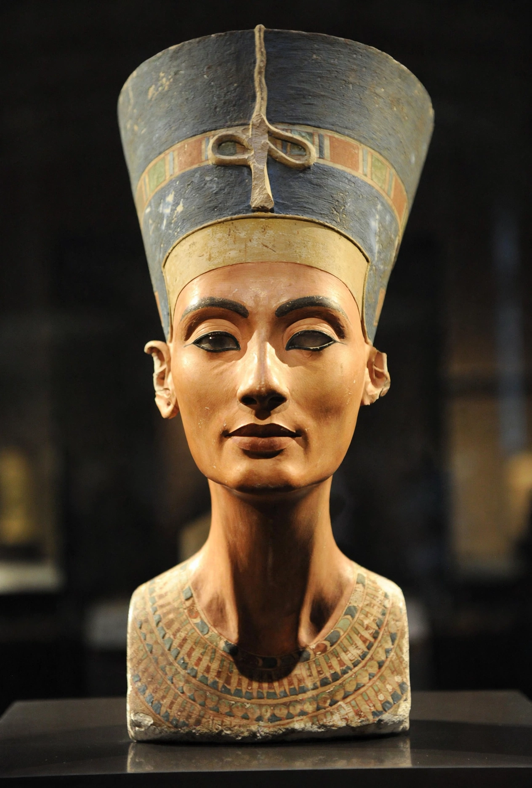

Nefertiti

Neferneferuaten Nefertiti (c. 1370 – c. 1330 BC) was a queen of the 18th Dynasty of Ancient Egypt, the Great Royal Wife of Pharaoh Akhenaten. She and her husband are known for their revolution in religious policy, in which they promoted the earliest known form of monotheism, Atenism, centred on the sun disc Aten.
Life and role
Nefertiti's origins are uncertain; her name, "a beautiful woman has come", has suggested foreign birth, but she was more probably Egyptian, possibly a daughter of the courtier Ay. She played an unusually prominent role beside Akhenaten, appearing in temple reliefs at nearly the king's scale, offering to the Aten, driving her own chariot and even smiting enemies — imagery normally reserved for pharaohs. She bore six daughters, among them Ankhesenpaaten, later wife of Tutankhamun. In Akhenaten's new capital at Amarna she was central to the royal cult.
Disappearance and possible reign
Nefertiti disappears from the record around year 12–14 of Akhenaten's reign. Theories include death from plague, disgrace, or — influentially — that she did not disappear at all but became co-regent under the name Neferneferuaten, possibly ruling briefly after Akhenaten's death. Her tomb has never been conclusively identified, and her mummy remains a subject of debate and periodic claims.
The bust
Her limestone bust, made in the workshop of the sculptor Thutmose at Amarna around 1345 BC, was found in 1912 by Ludwig Borchardt's expedition and taken to Berlin, where it is displayed in the Neues Museum. One of the most copied works of ancient Egypt, it has made Nefertiti an icon of feminine beauty; Egypt has long sought its return.